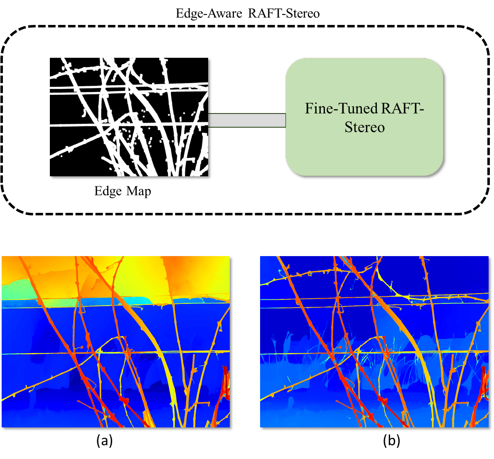
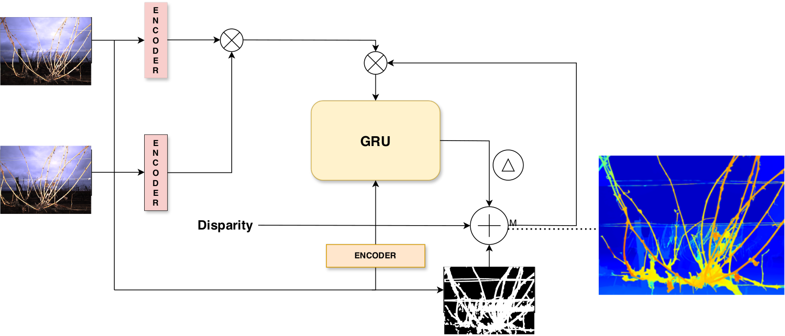
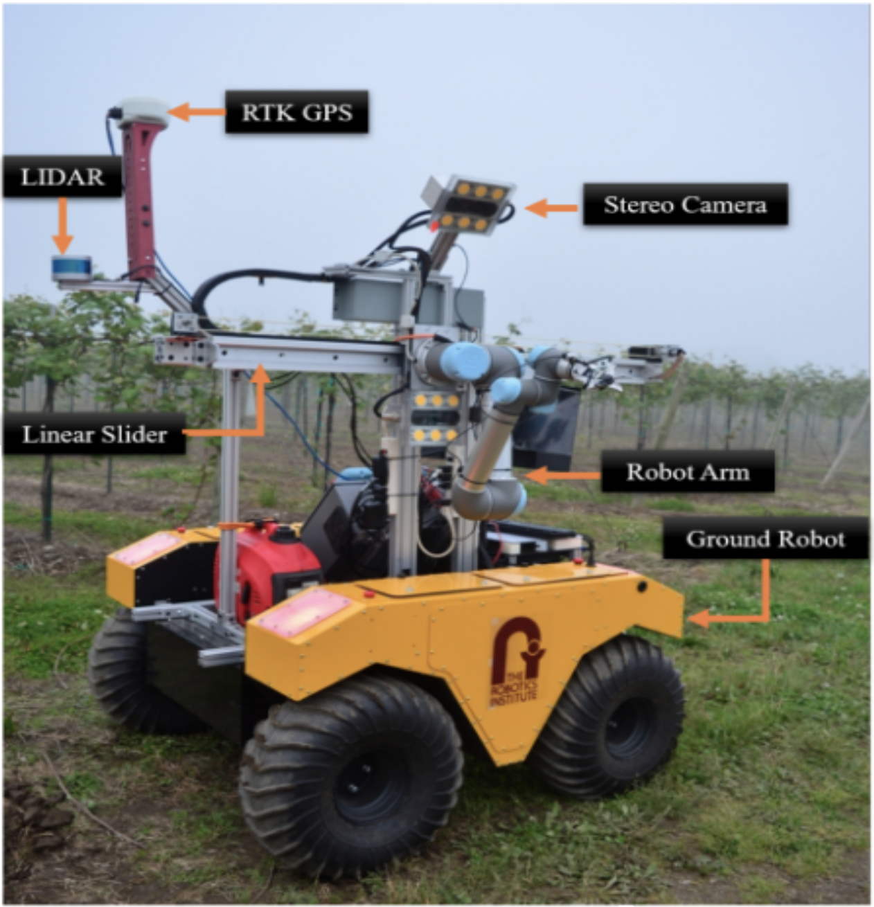
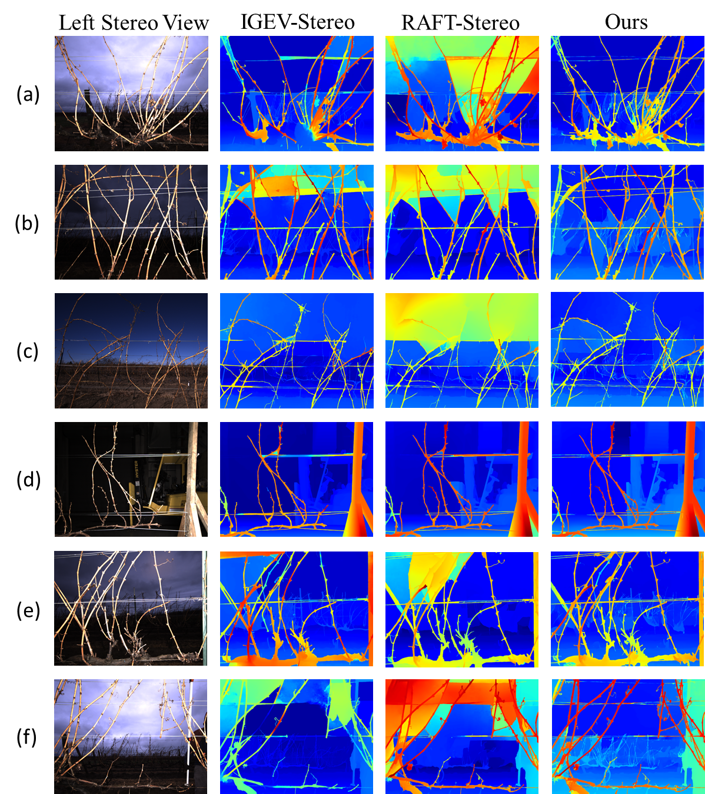
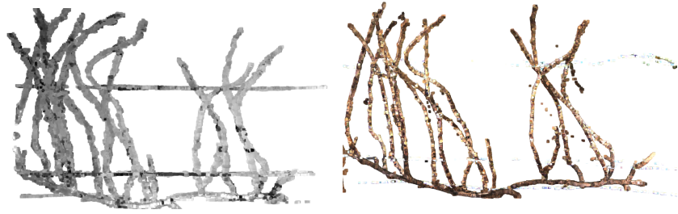
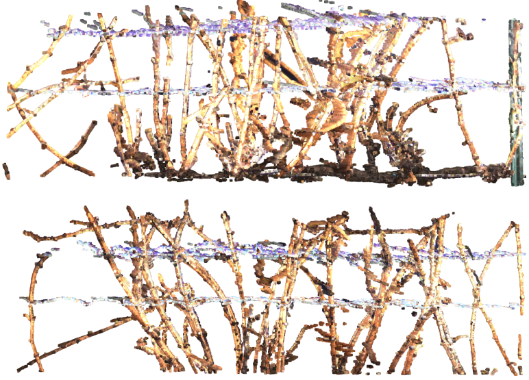

VineStereo: An Optimized Deep Stereo Network and Dataset for Thin Grapevine Structures
Introduction
Agricultural robotics faces significant challenges in tasks requiring precise manipulation of thin structures, such as grapevine pruning. Accurate perception of these delicate and intricate structures is critical but remains hindered by the scarcity of agricultural-specific datasets and the limitations of existing stereo-matching algorithms. Grapevine pruning, essential for optimizing yield and crop quality, is a labor-intensive process further exacerbated by skilled labor shortages. Addressing these issues is crucial for advancing automated solutions in viticulture and agricultural robotics.
Objective
To develop an edge-aware stereo-matching framework tailored for thin structure detection and perception, facilitating automated grapevine pruning. This research aims to overcome dataset scarcity by leveraging NeRF-Supervised Deep Stereo techniques for efficient data generation, ensuring the reliable and accurate reconstruction of thin structures in agricultural environments.
Methodology
Data Generation:
Utilized NeRF-Supervised Deep Stereo (NSDS) to generate synthetic stereo image datasets with "pseudo" ground truth depth maps, reducing the need for extensive real-world data collection.
Generated a comprehensive dataset of 20,000 stereo image pairs reflecting diverse grapevine structures and conditions.
Edge-Aware Stereo-Matching:
Introduced edge-awareness to the RAFT-Stereo framework by incorporating Sobel edge filtering and depth thresholding to enhance thin structure perception.
Fine-tuned the stereo-matching network using the synthetic datasets, with tailored masking strategies in GRU layers to improve depth estimation accuracy for thin structures.
3D Reconstruction:
Applied iterative point cloud registration using the colored Iterative Closest Point (ICP) algorithm to merge depth maps from multiple viewpoints, creating high-fidelity 3D reconstructions of grapevines.
Results
Qualitative Evaluation: The proposed pipeline demonstrated superior reconstruction of thin grapevine structures compared to conventional stereo-matching methods, reducing artifacts and enhancing fine detail preservation.
Quantitative Evaluation: Achieved a marked improvement in depth estimation accuracy, with the enhanced RAFT-Stereo network outperforming monocular depth estimation models, particularly in detecting fine structures.
Efficiency: The NSDS-based approach significantly reduced data collection efforts while maintaining high fidelity in stereo datasets, demonstrating the scalability of the method for real-world applications.
Conclusion
StereoVine represents a significant advancement in the automation of agricultural tasks, particularly grapevine pruning. By integrating NeRF-Supervised Deep Stereo techniques with edge-aware stereo-matching, this research addresses critical challenges in dataset scarcity and fine structure perception. The proposed framework enables reliable 3D reconstructions and automated pruning in viticulture, paving the way for broader applications in agricultural robotics. Future work will focus on integrating bud detection and cut point localization to further refine robotic pruning capabilities.
Visuals

Figure 1: (a) shows the disparity map generated using the original RAFT-Stereo network; (b) Shows disparity map generated from our optimized edge-aware RAFT-Stereo

Figure 2: Overview of VineStereo Matching Pipeline: This figure represents the integration of stereo images through dedicated encoders to a GRU-based network, which, along with disparity data and encoder-processed edge maps, refines the output to generate a detailed disparity map highlighting thin structures, as shown in the color-coded depth representation on the right.

Figure 3: Real world setup

Figure 4: Qualitative Results: Depth Map

Figure 5: Qualitative Results: Point Cloud ground truth (left) vs ours (right)

Figure 6: Qualitative Results: In-the-wild Vine Point Cloud